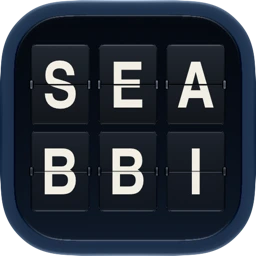

iPhone & Apple WatchAweigh
The ferry ride starts
before you step aboard.
Live departures, vessel locations, capacity and alerts, organized around the trip a rider is trying to make.
A rider-first app for Washington State Ferries. Real ferry records inform its schedule and cancellation logic, with a Cloudflare backend behind the scenes.
Explore Aweigh Awaiting App Review
Native software2026
The app, on your wristActual watchOS recording

Press play to take a look.